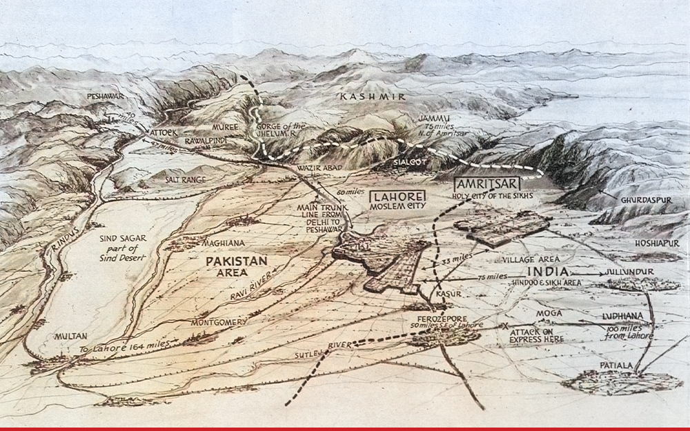

Click to enlargeA coloured bird’s-eye panorama of the newly partitioned Punjab, drawn by Percy Home for the British weekly The Sphere in September 1947. It converts boundary, migration routes and sites of violence into a single dramatic prospect for metropolitan readers — the collection’s 1947 epilogue.
Authorship and object
A panoramic view drawn by the artist Percy Home and published in The Sphere in London on 13 September 1947, barely a month after partition and independence. It formed the cartographic element of an illustrated feature, “The Two-Way Exodus in the Punjab.” The photographs and captions surrounding the panorama on the original page are not reproduced here.
A map in dramatic perspective
Rather than a plan, Home adopts a low, tilted viewpoint looking north-east across the Punjab plains toward Kashmir, so the land recedes in theatrical depth. Rivers, trunk road and railway become the arteries of flight. The broken boundary separates “Pakistan Area” from “India (Hindoo & Sikh Area),” while Lahore and Amritsar are labelled through communal identity and notes of violence are fixed to particular routes.
The gaze
This is a journalistic version of the European gaze, and a troubling one. A British magazine renders the catastrophe that followed the hurried partition and withdrawal over which its own government had presided as an absorbing panorama for readers at home. A human disaster in which communities suffered and inflicted terrible violence is flattened into a vista that can be taken in at a glance. The page belongs beside the 1946 staff map, but not because it shows “the same line”: the earlier sheet records one stage in official contingency planning, while this panorama turns the consequences of the completed boundary-making process into popular illustration.
Epilogue
The formal collection ends in 1946. This image follows as an epilogue because it shows what the imperial archive generally withholds: not merely another proposed or administered line, but the metropolitan act of looking at the upheaval after the line had entered lived space. The collection begins with India imagined from the deck of a ship and ends with Punjab viewed from an impossible aerial distance.
Source note
Publication citation: Percy Home, panorama for “The Two-Way Exodus in the Punjab,” The Sphere, London, 13 September 1947. A stable public catalogue link for the reproduced image has not yet been identified; the full page should be cited when the archival scan is used in research or teaching.